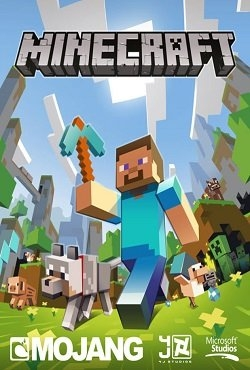
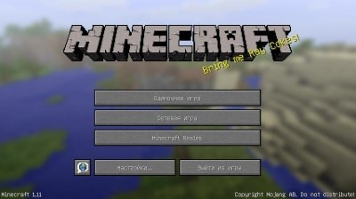
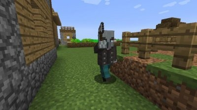
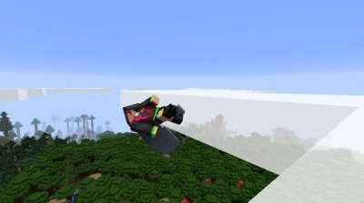
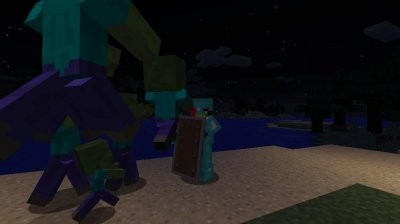
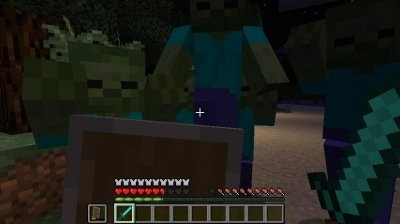
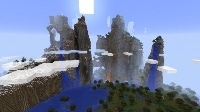

Издатель: Mojang
Разработчик: Mojang
дата выхода: 2026
Категория: Песочницы / Игры на русском / Игры 2025
Язык интерфейса: Русский, Английский
Язык озвучки: отсутствует/не требуется
Субтитры: Русский, Английский
Таблетка: Не требуется

Приготовьтесь создать свой необычный кубический мир. Это вам позволит увлекательная аркадная игра, в которую с наслаждением играют геймеры. Сначала вы должны будете обустраивать свою игровую территорию. Сам процесс игры разделен на несколько режимов. Сначала вы будете добывать огромное количество игровых ресурсов, чтобы потом изготавливать для себя оружие, создавать цветные постройки из кубиков, перемещая разнообразные блоки. Даже фермерской деятельностью вы сможете заняться в процессе игры. Очень много разнообразных миссий вы должны пройти. Но самый трудный момент – это выживание, ведь в начале у вас не будет никакого жилья и убежища. Но потом ваш герой возьмет лопату и под землей сможет отыскать необходимые ископаемые. Скачать Майнкрафт через торрент бесплатно на компьютер вы сможете с нашего обновленного игрового сервера. Стройте здания и не забудьте защитить себя от коварных ночных монстров и чудовищ.
В данной игре вам дается полная свобода действий. Теперь вы будете заниматься строительством не в одиночку, а искать себе компаньонов. Так будет проще и веселее. В игре вы будете создавать квадратные строения разнообразной формы. Сначала вы будете строить жилые дома из кубиков, а затем можно будет возводить красивые постройки – здесь проявите свою игровую фантазию и воображение. Очень много ремесел вы должны освоить по ходу игры, но больше времени уделяйте поискам ценных ресурсов. Под землей у вас появиться шанс найти разнообразные артефакты. Руду, древесину и золото можно использовать, чтоб затем изготовить для себя необычные виды оружия. Еще просто перемещайтесь по виртуальному квадратному миру и наслаждайтесь созданными вашим персонажем постройками. За каждый успешно пройденный игровой этап вы будете получать бонусы для развития навыков вашего кубического героя. Также в процессе игры вы должны ухаживать за своим огородом – там можно будет вырастить разнообразные культуры.
Теперь ваш основной персонаж сможет даже летать, ведь в этой игре добавились крылья для полетов. Но вот ваши постройки нужно постоянно модернизировать. Для этого вы должны правильно научиться размещать квадратные блоки, чтобы создавать уникальные сооружения на игровых локациях. В игре Майнкрафт, скачать торрент которой можно бесплатно на нашем игровом сервере, можно будет играть в одиночном режиме, а можно испробовать кооперативный режим и вместе с друзьями заниматься строительством, поиском ресурсов, приручением животных. Кубический игровой мир безграничен, поэтому используйте ваши креативные способности, чтобы создавать настоящие игровые строительные шедевры.
Переносясь, а такую необычную игровую Вселенную, вы сможете заниматься всем, чем угодно. Только вот не забывайте про опасных врагов, с которыми вы будете встречаться на протяжении всех игровых миссий. Удачи вам, землекоп и строитель!
Строительство и охота. В процессе игры вы будете не только возводить невероятных размеров постройки, вам еще нужно будет охотиться, ведь ваш герой очень прожорливое создание.
Опуститесь под землю. Именно в подземных лабиринтах можно найти хорошие игровые ресурсы, вот только под землей нужно всегда быть начеку, ведь там могут на вас напасть необычные монстры, которые притаились в укромных уголках подземелий. Скачать игру Майнкрафт на ПК через торрент можно бесплатно с нашего сервера.
Сетевой режим. Вместе с вашими друзьями можно строить новые сооружения, за которые получите бонусы для добычи предметов. Этим предметы можно использовать для создания оружия для вашего квадратного героя.
СКРИНШОТЫ ИЗ ИГРЫ






Системные требования Майнкрафт
OS: Windows XP/Vista/7/8/10
CPU: Intel Pentium D или AMD Athlon 64 (K8) 2.6 GHz
RAM: 2GB
GPU (Встроенные): Intel HD Graphics или AMD (ранее ATI) Radeon HD Graphics с поддержкой OpenGL 2.1
GPU (Дискретные): Nvidia GeForce 9600 GT или AMD Radeon HD 2400 с поддержкой OpenGL 3.1
HDD: 200 МБ свободного места на диске
Java 6 Release 45
Размер: 0.970 ГБ